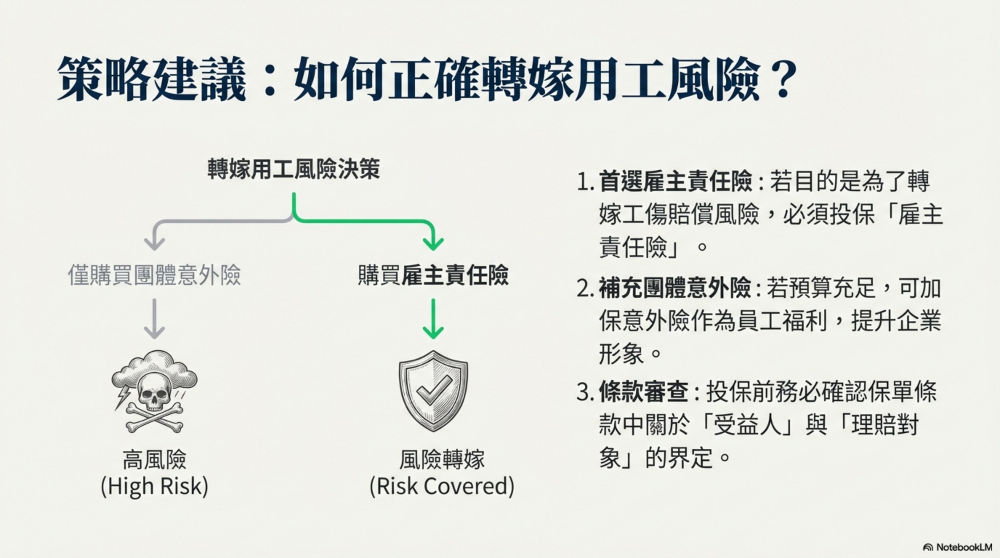
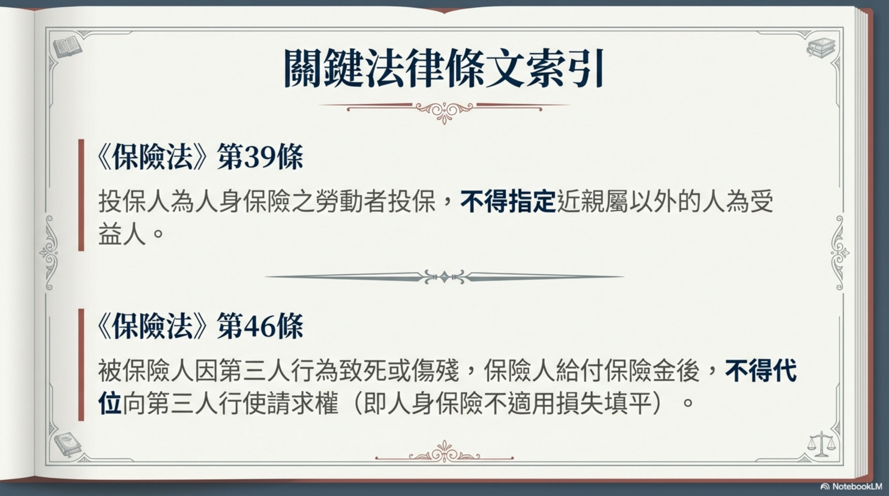
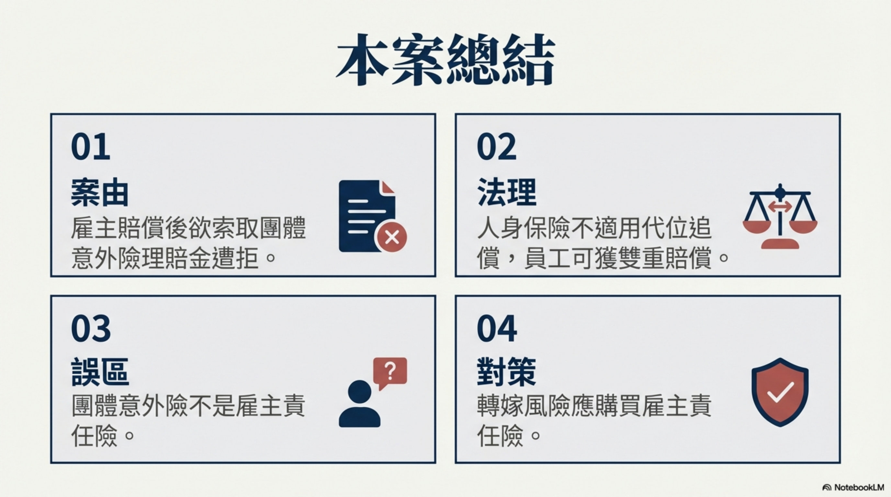
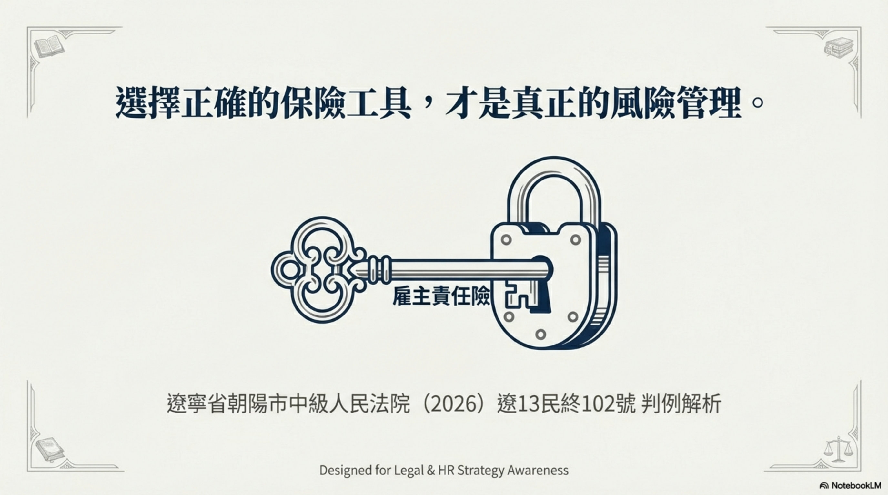
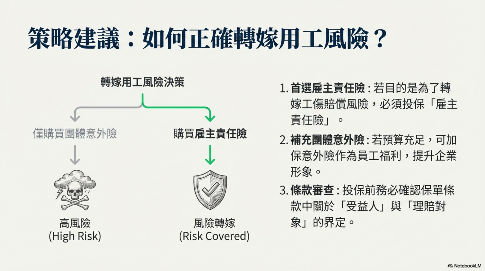
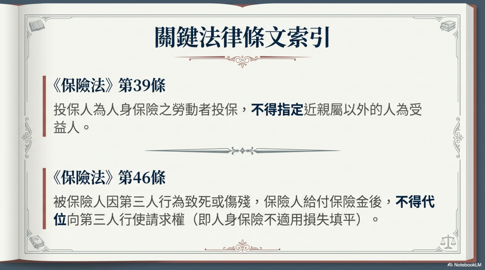
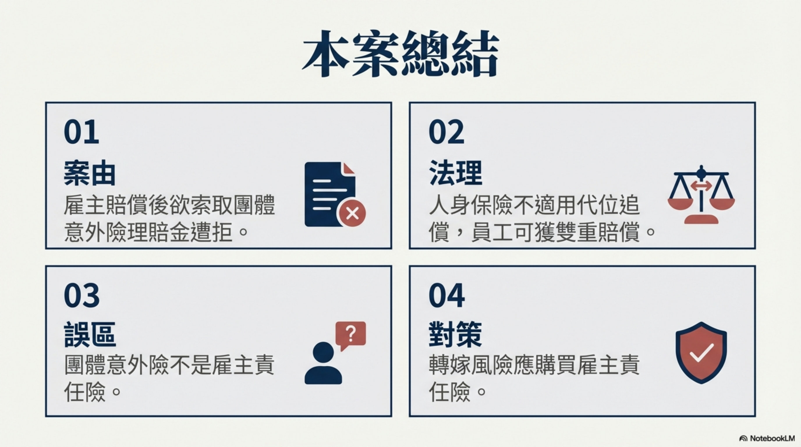
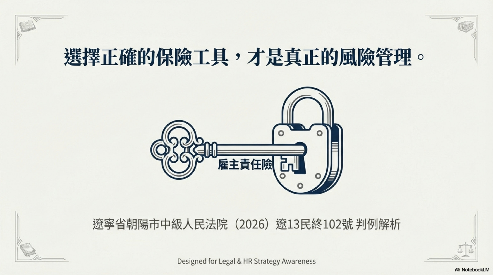

摘要
本案為人身保險合同糾紛，投保人中承建設公司為僱員韓某投保團體意外險，韓某受傷後，公司賠償其損失，隨後向保險公司主張理賠遭拒。法院認定團體意外險非雇主責任險，投保人無權代位主張保險金，駁回上訴，維持原裁定。
爭議焦點與裁判要旨
- 團體意外險受益人限被保險人或其近親屬，投保人不得為受益人
- 人身保險不適用損失填平原則，被保險人可兼得保險金與第三人賠償
- 雇主賠償僱員後，不享有代位追償權，無法取得保險金請求權
- 團體意外險與雇主責任險性質不同，投保目的與保障對象有別
法學見解
本案裁判理由主要基於《保險法》第39條及第46條。第39條規定投保人為勞動者投保人身保險時，受益人僅限被保險人或其近親屬，排除投保人（雇主）成為受益人的可能，此為強制性規定，旨在保障被保險人權益，避免道德風險。第46條則確立人身保險不適用損失填平原則，允許被保險人同時獲得保險金與第三人賠償，體現人身保險的定額給付特性，與財產保險的補償原則有別。法院據此認定，雇主雖支付保費並賠償僱員，但無權代位向保險公司主張保險金，因保險金請求權仍屬被保險人。對保險實務的啟示在於：雇主應明確區分團體意外險與雇主責任險，前者保障被保險人個人，後者轉嫁雇主賠償責任；投保時須遵循受益人指定規則，避免無效約定；實務中常見雇主誤將團體意外險用於風險轉嫁，本案釐清法律界限，提示雇主應依需求選擇合適險種，並透過合同明確權益歸屬，以降低糾紛風險。

 







人身保險合同糾紛二審民事裁定書
基本資訊
| 項目 | 內容 |
|---|---|
| 案號 | （2026）遼13民終102號 |
| 案由 | 人身保險合同糾紛 |
| 審理法院 | 遼寧省朝陽市中級人民法院 |
| 審理程序 | 民事二審 |
| 裁判日期 | 2026-01-28 |
| 當事人 | 中承(遼寧)建設有限公司 vs 中國某有限公司朝陽市中心支公司 |
| 第三人 | 韓某 |
| 結果 | ❌ 保戶（投保人）敗訴 — 駁回上訴，維持原裁定 |
案情摘要
上訴人（投保人）中承建設公司為其僱員韓某投保了建築工程團體人身意外傷害保險。韓某在工地工作時受傷，產生醫療費47,650.02元，傷殘等級十級。
韓某通過提供勞務者受害責任糾紛向中承公司索賠，法院判決中承公司應賠付165,936.3元。中承公司已全額履行賠償責任後，向保險公司主張理賠58,000元（意外傷殘28,000元 + 意外醫療30,000元），被拒賠。
爭議焦點
投保人（雇主）在賠償僱員後，是否有權代位向保險公司主張團體意外險的保險金？
法院裁判理由
一審法院認為：
- 建築工程團體意外傷害保險並非雇主責任險
- 該人身保險的受益人一般為被保險人或其指定的人
- 《保險法》第39條規定：投保人為與其有勞動關係的勞動者投保人身保險，不得指定被保險人及其近親屬以外的人為受益人
- 韓某未將保險權益轉讓給投保人，投保人無權依保險合同主張權利
二審法院認為：
- 雇主承擔賠償責任後不能獲得雇員的意外險保險金請求權
- 《保險法》第39條第2款：投保人為勞動者投保人身保險，不得指定近親屬以外的人為受益人
- 用人單位雖然支付了保險費，但不能成為團體意外險受益人，不享有保險金請求權
- 《保險法》第46條：被保險人或受益人可以兼得保險金與第三人的賠償（損失填平原則不適用於人身保險）
- 雇主向雇員承擔賠償責任後，不應享有代位追償權，不應自動獲得雇員的意外險保險金請求權
關鍵法律依據
- 《中華人民共和國保險法》第39條 — 受益人指定規則
- 《中華人民共和國保險法》第46條 — 人身保險不適用損失填平/代位追償
- 《中華人民共和國民事訴訟法》第177條第1款第1項
實務啟示
| 要點 | 說明 |
|---|---|
| ⚠️ 團體意外險 ≠ 雇主責任險 | 投保人（雇主）不能把團體意外險當作雇主責任險使用 |
| ⚠️ 投保人無權直接主張 | 即使投保人支付了保費，受益人仍是被保險人本人 |
| ⚠️ 人身保險不適用代位追償 | 雇主賠償僱員後，不能自動取得僱員的保險金請求權 |
| ✅ 被保險人可雙重獲賠 | 被保險人可以同時獲得保險金和第三人賠償 |
| 💡 建議 | 雇主若要轉嫁賠償風險，應投保雇主責任險而非團體意外險 |